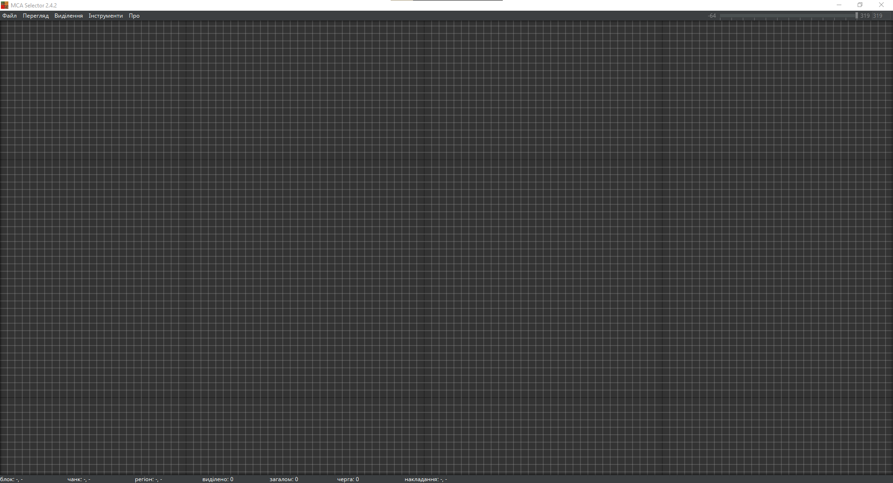

Гайд по MCA Selector
Розділ 1: Встановлення програми
Щоб почати, завантаж MCA Selector із GitHub. Для цього перейди на цю сторінку і завантаж файл MCA_Selector_Setup.exe, просто натиснувши на нього. Далі відкрий файл та встанови програму.
Розділ 2: Перший запуск та завантаження світу
Не забудь! Перед початком роботи зроби резервну копію свого світу. MCA Selector видаляє файли без можливості відновлення.
Після встановлення програми, відкривай її та трохи зачекай. У тебе має відритися вікно з темною сіткою. Ось і вся програма!
Неочікувано і приємно: в програмі є українська мова! (File Settings Languages)
Розділ 3:
Розділ 4:
Розділ 5:
Розділ 6: